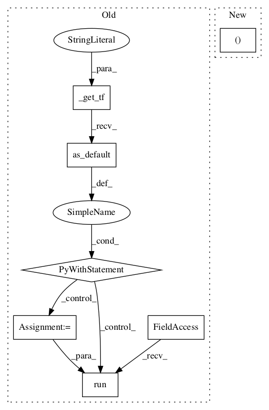

b68db1aaf6abe4d2cea8321cc6f1564228dd60f5,deepchem/models/tensorgraph/models/seqtoseq.py,SeqToSeq,predict_from_sequences,#SeqToSeq#Any#Any#,226
Before Change
the beam width to use for searching. Set to 1 to use a simple greedy search.
result = []
with self._get_tf("Graph").as_default():
for batch in self._batch_elements(sequences):
feed_dict = {}
feed_dict[self._features] = self._create_input_array(batch)
feed_dict[self._gather_indices] = [(i, len(batch[i])
if i < len(batch) else 0)
for i in range(self.batch_size)]
feed_dict[self._training_placeholder] = 0.0
for initial, zero in zip(self.rnn_initial_states, self.rnn_zero_states):
feed_dict[initial] = zero
probs = self.session.run(self.output, feed_dict=feed_dict)
for i in range(len(batch)):
result.append(self._beam_search(probs[i], beam_width))
return result
def predict_from_embeddings(self, embeddings, beam_width=5):
Given a set of embedding vectors, predict the output sequences.After Change
features = self._create_input_array(batch)
indices = np.array([(i, len(batch[i]) if i < len(batch) else 0)
for i in range(self.batch_size)])
probs = self.predict_on_generator([[(features, indices,
self.get_global_step()) , None,
None]])
for i in range(len(batch)):
result.append(self._beam_search(probs[i], beam_width))In pattern: SUPERPATTERN
Frequency: 3
Non-data size: 7
Instances Project Name: deepchem/deepchem
Commit Name: b68db1aaf6abe4d2cea8321cc6f1564228dd60f5
Time:
Author: null
File Name: deepchem/models/tensorgraph/models/seqtoseq.py
Class Name: SeqToSeq
Method Name: predict_from_sequences
Project Name: deepchem/deepchem
Commit Name: de7f5863338af5e1f92257cb29a6ca9a1c52c473
Time:
Author: null
File Name: examples/low_data/toxcast_maml.py
Class Name:
Method Name: compute_scores
Project Name: deepchem/deepchem
Commit Name: b68db1aaf6abe4d2cea8321cc6f1564228dd60f5
Time:
Author: null
File Name: deepchem/models/tensorgraph/models/seqtoseq.py
Class Name: SeqToSeq
Method Name: predict_embeddings